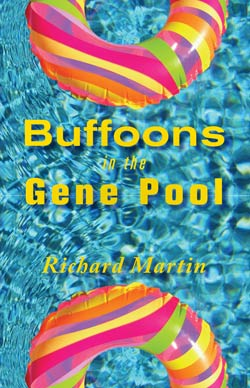

|
 Order from Lavender Ink |
ISBN 978-1935084884
160 pages: $16.00
January, 2016
A Lavender Ink/Fell Swoop joint venture

Just who are the buffoons here? Reflected in bathroom and bedroom mirrors galore, you may recognize yourself or one of your selves or people you thought you knew, who are presently treading water in the gene pool. These 40 "stories" will send up narrative while simultaneously sending concentric guffaws up your periscope. Strip down to your birthday suit and dive right in; there's no lifeguard on duty—ever.
Praise for Buffoons in the Gene Pool
Richard Martin offers a sitcom of stories that will melt the hearts of presidential candidates and encourage others to withdraw from online dating services. Buffoons in the Gene Pool will take America.com by storm.
-Al Pants, author of The Year I Wanted to Be on Television
Richard Martin's Buffoons in the Gene Pool will soon replace every microwave in every kitchen in every possible version of Tomorrow and you will think back to this moment and weep pot roast…
-Claudia May Nostril, author of Me & My Thoughts
Repeat after me: Must reads are dead and gone; must reads are dead and gone; must reads are dead and gone. Buffoons in the Gene Pool is a must read.
-Ant McGoogle, author of The Ghost of Richard Brautigan; publisher of deadCpress
Martin is a satirist. His plotless tales revel in the spontaneity of the absurd in daily life. His characters fill in for the buffoons we are and the ones we know and love.
-Duck Martian, author of Napkin Apologies and Automaton Holiday